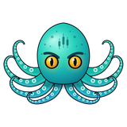

Choisis qui répond à tes questions. Sans clé API, Kraken répond avec sa base intégrée, hors-ligne.
OpenAI, Groq, OpenRouter, Mistral, ou un serveur local (Ollama, llama.cpp).
Les clés sont enregistrées dans config.json sur cet appareil et envoyées uniquement au fournisseur choisi.